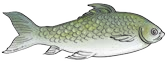
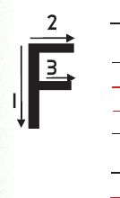

Lesson 4: Letter F
Lesson 4
Letter F

Draw, identify, or describe the pattern for the letter F; explore a teacher-provided raised-line version before answering.
Trace the uppercase letter F or write dot six, then dots one, two, and four.

Copy or finger spell the letter F using the writing lines, keyboard, or braille.
Copy or finger spell uppercase F with lowercase f using the writing lines, keyboard, or braille.